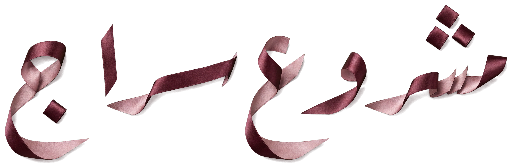

<!doctype html>
<html><head><meta charset="utf-8"><title>SIRAJ · Project Siraj façade post</title>
<!-- Project Siraj · official façade post. Open with ?fmt=post|story&lang=ar|en
     Building: SIRAJ_Project-Siraj_Facade_Cutout_v1.0.png (tools/project-siraj-facade-prep.py). Silk: real silk photograph, SIRAJ Silk Ribbon-Sweep cut-out (06-SIRAJ-Silk/Stills/Alpha). -->
<link rel="stylesheet" href="../../../09-Design-System/css/siraj.css">
<style>
  html, body { margin: 0; background: #F7F2ED; }
  #art { position: relative; overflow: hidden; background: #F7F2ED; color: #3B3436; }
  #art.post { width: 1080px; height: 1350px; }
  #art.story { width: 1080px; height: 1920px; }
  #silk { position: absolute; display: block; }
  .bld { position: absolute; left: 50%; transform: translateX(-50%); }
  .bld img { display: block; width: 100%; height: 100%; }
  .shadow { position: absolute; left: 50%; transform: translateX(-50%); height: 26px; border-radius: 50%;
    background: radial-gradient(closest-side, rgba(44,15,18,.28), rgba(44,15,18,0)); }
  .ground { position: absolute; left: 72px; right: 72px; height: 1px; background: #AA9180; }
  .top { position: absolute; left: 72px; right: 72px; top: 72px; display: flex; justify-content: space-between; align-items: center; }
  .logo { height: 34px; display: block; }
  .eyebrow { font: 500 15px/1 Jost, sans-serif; letter-spacing: .22em; text-transform: uppercase; color: #602733; display: flex; align-items: center; gap: 12px; }
  .lumen { width: 8px; height: 8px; background: #AA9180; transform: rotate(45deg); display: inline-block; }
  .copy { position: absolute; left: 72px; right: 72px; }
  .title { font: 300 96px/1 Jost, sans-serif; letter-spacing: -.01em; color: #2C0F12; margin: 0; }
  .head { font: 400 40px/1.15 Jost, sans-serif; color: #602733; margin: 14px 0 0; }
  .line { font: 300 26px/1.45 Jost, sans-serif; color: #3B3436; margin: 12px 0 0; max-width: 680px; }
  .foot { position: absolute; left: 72px; right: 72px; bottom: 64px; display: flex; justify-content: space-between; align-items: center;
    font: 400 17px/1 Jost, sans-serif; letter-spacing: .06em; color: #3B3436; }
  .foot b { font-weight: 500; color: #602733; }
  .disc { position: absolute; left: 72px; right: 72px; font: 400 11px/1.3 Jost, sans-serif; letter-spacing: .04em; color: #8E837D; }
  /* Arabic */
  [dir=rtl] .eyebrow { font: 500 19px/1 'SIRAJ Digits', Tajawal, sans-serif; letter-spacing: 0; }
  .title .lettering { height: 132px; width: auto; display: block; }   /* «مشروع سراج» silk-script lettering */
  [dir=rtl] .title { font: 500 112px/1 'SIRAJ Digits', Tajawal, sans-serif; letter-spacing: 0; }
  [dir=rtl] .head { font: 500 42px/1.45 'SIRAJ Digits', Tajawal, sans-serif; }
  [dir=rtl] .line { font: 400 28px/1.6 'SIRAJ Digits', Tajawal, sans-serif; }
  [dir=rtl] .foot { font: 400 19px/1 'SIRAJ Digits', Tajawal, sans-serif; letter-spacing: 0; }
  [dir=rtl] .disc { font: 400 13px/1.3 'SIRAJ Digits', Tajawal, sans-serif; letter-spacing: 0; }
  .ltr { direction: ltr; unicode-bidi: isolate; font-family: Jost, sans-serif; letter-spacing: .06em; }
  .ig { width: .92em; height: .92em; vertical-align: -0.13em; margin-inline-end: .38em; display: inline-block; }
</style>
</head><body>
<div id="art">
  <div class="shadow"></div><div class="ground"></div>
  <div class="bld"></div>
  <div class="top"><div class="eyebrow"></div></div>
  <div class="copy"><h1 class="title"></h1><p class="head"></p><p class="line"></p></div>
  <div class="disc"></div>
  <div class="foot"></div>
</div>
<script src="../../../11-Social/Templates/brand-data.js"></script>
<script>
const q = new URLSearchParams(location.search);
// Posts show phone + Instagram icon + handle only (no «@», no website).
const CT = window.SIRAJ_BRAND.contact;
const PH = `<b class="ltr">${CT.phone_display}</b>`;
const fmt = q.get('fmt') || 'post', lang = q.get('lang') || 'ar';
const art = document.getElementById('art'); art.className = fmt;
if (lang === 'ar') art.setAttribute('dir', 'rtl');
const T = {
  ar: { eyebrow: 'مسقط', title: '', head: 'أوّلُ الضوء.', line: 'شقق سكنية ومحلات تجارية.',
        foot: `<span>سجّل اهتمامك · ${PH}</span><span class="ltr">${CT.social_icon_svg}${CT.social_handle}</span>`,
        disc: 'تصوّر معماري للواجهة الرسمية للمشروع.' },
  en: { eyebrow: 'Muscat', title: 'Siraj', head: 'The first light.', line: 'One building. A complete standard.',
        foot: `<span>Register your interest · ${PH}</span><span class="ltr">${CT.social_icon_svg}${CT.social_handle}</span>`,
        disc: 'Architectural visualisation of the official project façade.' },
}[lang];
// layout per format: building height, base line (y), copy top
const L = { post: { bh: 660, base: 900, copy: 950, disc: 1226 }, story: { bh: 820, base: 1250, copy: 1320, disc: 1772 } }[fmt];
const BW = L.bh * 864 / 1104;
Object.assign(document.querySelector('.bld').style, { width: BW + 'px', height: L.bh + 'px', top: (L.base - L.bh) + 'px' });
Object.assign(document.querySelector('.shadow').style, { width: BW * 1.18 + 'px', top: (L.base - 13) + 'px' });
document.querySelector('.ground').style.top = L.base + 'px';
document.querySelector('.copy').style.top = L.copy + 'px';
document.querySelector('.disc').style.top = L.disc + 'px';
document.querySelector('.logo').src = '../../../01-Logos/SVG/SIRAJ_Logo_Primary_v1.0.svg';
document.querySelector('.eyebrow').innerHTML = `<span class="lumen"></span>${T.eyebrow}`;
document.querySelector('.title').innerHTML = T.title;
document.querySelector('.head').textContent = T.head;
document.querySelector('.line').textContent = T.line;
document.querySelector('.foot').innerHTML = T.foot;
document.querySelector('.disc').remove(); // no side notes on designs (client rule 2026-10-12)

// SIRAJ Silk — one real silk ribbon travelling behind the building along the Silk Axis (rising to the upper end)
const W = art.offsetWidth, silk = document.getElementById('silk');
const SW = W * (fmt === 'story' ? 1.3 : 1.18), SH = SW * 9 / 16;
const yb = L.base - 0.42 * L.bh;                         // ribbon crosses the building at ~42 % of its height
Object.assign(silk.style, { width: SW + 'px', height: SH + 'px', left: (W - SW) / 2 + 'px', top: (yb - 0.54 * SH) + 'px' });
silk.src = '../../../06-SIRAJ-Silk/Stills/Alpha/SIRAJ_Silk_Ribbon-Sweep-Alpha_16x9_v1.0.png';
(silk.complete ? Promise.resolve() : new Promise((r) => (silk.onload = r))).then(() => Promise.all([...document.images].map((i) => i.decode().catch(() => {})))).then(() => (window.ready = true));
</script>
</body></html>
